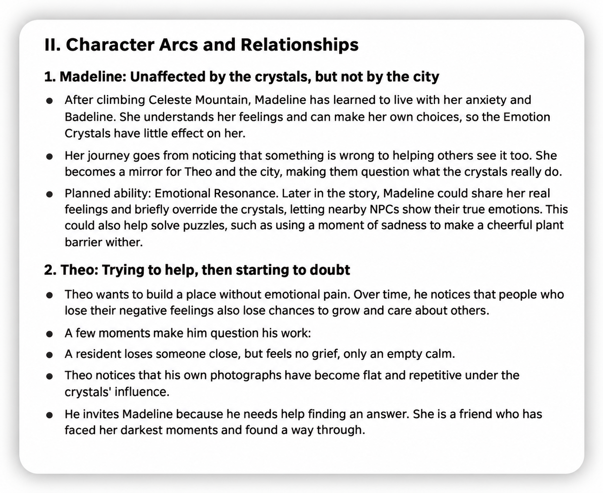

Crystals that work differently
I can change how much dash or stamina a crystal gives back, when it works, how long it freezes the action, and when it comes back. Those choices change how a player might get through a room.
See the crystal code ↗My own mod for Celeste. I’m making new rooms and puzzles, and a story about a city where people’s emotions are kept under control.
I first fell in love with Celeste as a player: the way each jump felt, the clever level design, and a story that made the climb feel personal. The more I played, the more I wanted to understand how it all worked. Eventually, I wanted to make a small part of that world myself.
That became City of Empyrean. I was still in high school and had never developed a game or a mod before. I had to start from scratch and learn how to use the tools, one step at a time. After a while, I noticed I was playing differently. I wasn’t just trying to finish a room anymore. I was asking why a platform was there, or what made a series of jumps so interesting. Sometimes I would replay a section dozens of times, even a hundred, just to understand its design.
Creating my own puzzles brought more things to learn, including video editing, voice recording, and audio editing. There was always something new to figure out, and I started to really enjoy that.
I still have a lot to learn, but making this mod has changed how I look at games. At university, I hope to understand more of what goes into making games and learn how to build the ideas I can’t make yet.
What if a city could take away people’s sadness and anger? Would that make it a better place to live? That question became the starting point for my story. In Empyrean, people use “Emotion Crystals” to keep their feelings under control. Everything seems calm, but I wanted players to wonder what that calm might cost.
I brought Madeline and Theo into this setting. Theo has helped build the city’s emotion-control system, while Madeline arrives from outside and starts to notice what feels wrong. I’m planning four endings so players can explore different choices. These are story plans I’m still working on.
Screenshots from development, with the timer and testing options still visible. Click either image for a closer look.
I didn’t want Theo to be a simple villain. He wants to help people, but starts to question his own system when he sees what they have lost. Madeline gives him a different way to look at it: she has already learned to live with her anxiety, rather than make it disappear.
In my notes, I also explored a puzzle idea where Madeline’s feelings could briefly change how nearby people or objects behave. I’m still working out how these ideas could fit into the game.

I can change how much dash or stamina a crystal gives back, when it works, how long it freezes the action, and when it comes back. Those choices change how a player might get through a room.
See the crystal code ↗Some platforms let you pass through while dashing, and I can change the timing by a few frames. Others change the area that the player can touch, depending on where they are and how fast they’re moving. This helps with cornerboosts, where touching a corner changes the player’s movement.
See the platform code ↗The Lua scripts let gravity and jump strength change as part of a puzzle. I wanted players to think about the movement rules as well as where to go.
See the puzzle script ↗I designed the mod’s rooms and worked out how the platforms, movement rules, and puzzles would fit together. I also wrote the story and character plans shown above.
I wrote C# code for objects such as the crystals and platforms, and Lua scripts for the puzzles. I also worked on tools to change how the player moves and what they can do.
I added my objects to the Loenn level editor, then brought the rooms, dialogue, images, and background tiles together in the mod.
I used Celeste, Everest, and helpers made by the modding community. They’re listed on GitHub.